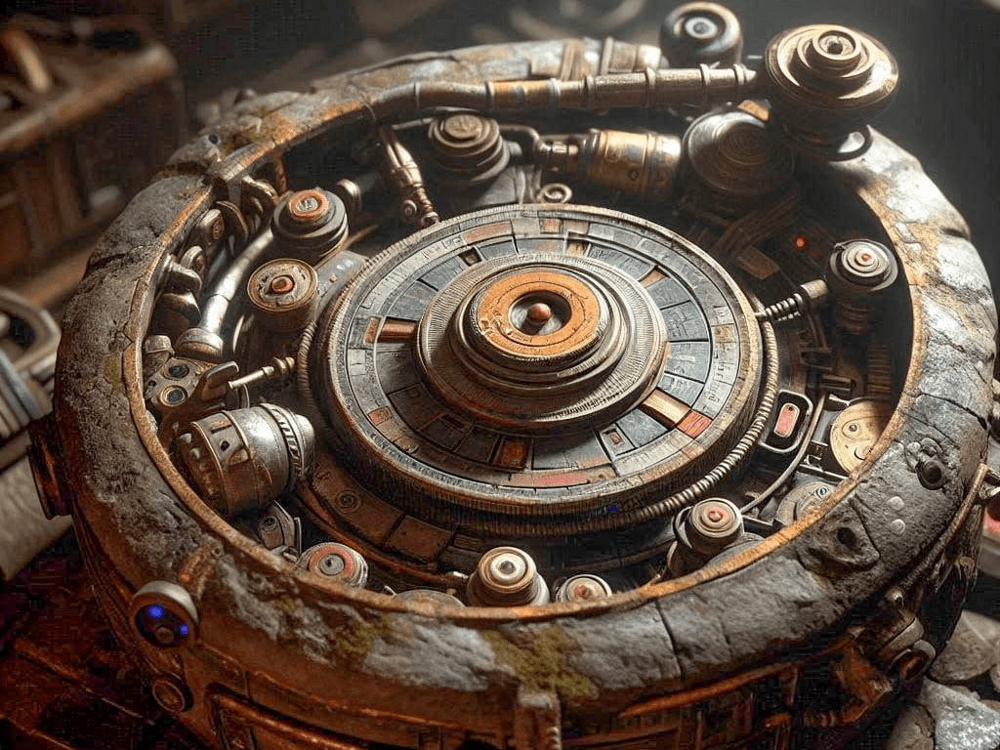

Artefakt
Quelle: P2
Das Artefakt ist wirklich ein Wunderwerk der fast komplett verlorenen antiken lumarischen Kunst. Vor etwa 2.000.000 Äonen wurde dieses Artefakt für den ersten Kaiser geschaffen, um sein Imperium gegen die Mächte des Inner Rim zu verteidigen und die Bürger Lumarias vor dunklen Kräften zu schützen. Sogleich jedoch reißt der Fremde dir das Artefakt aus der Hand und verhält sich merkwürdig.